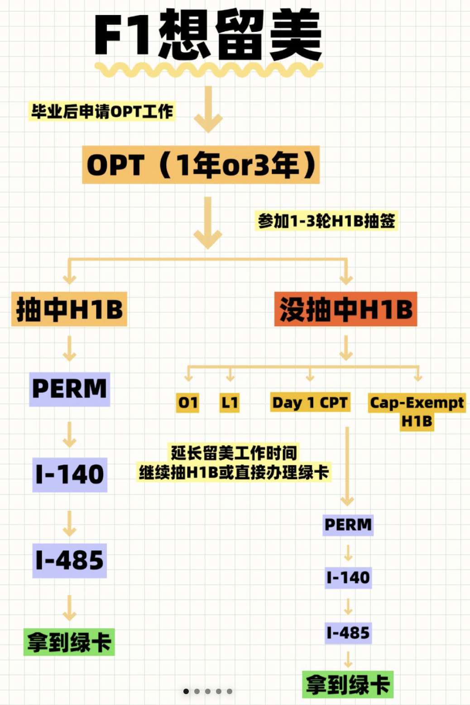

F1 to GreenCard graph

h1b是什么，如何获得，抽签的前提，如何生效，流程
H1B 申请流程和时间节点
流程概述
H1B 签证是美国为吸引专业技术人才而设立的非移民工作签证。整个申请流程涉及多个步骤和不同参与方，包括美国雇主、劳工部（DOL）和美国公民及移民服务局（USCIS）。以下为你详细介绍 H1B 申请流程和关键时间节点。
申请流程及时间节点
提前准备（通常上一年 10 月 - 次年 2 月）
- 雇主资格审查：雇主需证明其业务运营合法且有能力支付雇员合理薪资。这可能涉及提供公司财务报表、商业执照等文件。
- 职位要求确定：明确招聘职位需符合专业工作标准，通常要求具备相关领域的学士学位或同等工作经验。
- 寻找申请人：雇主通过招聘流程寻找合适的外国员工，并提供工作 offer。
劳工条件申请（LCA）阶段（次年 2 月 - 3 月）
- 提交申请：雇主需向劳工部（DOL）提交劳工条件申请（LCA），该申请包含职位信息、薪资待遇、工作地点等内容。
- 公示要求：LCA 提交后，雇主必须在工作场所显著位置公示 10 天，以确保员工和工会了解相关信息。
注册阶段（次年 3 月 1 日 - 3 月 18 日）
- 在线注册：雇主在 USCIS 官方指定的在线系统中为申请人注册 H1B 抽签。注册时需提供申请人基本信息及相关工作 offer 详情。
- 缴纳费用：每个注册申请需缴纳 10 美元的注册费。
抽签阶段（次年 3 月下旬 - 4 月上旬）
- 抽签结果公布：USCIS 通常在 3 月下旬进行抽签，并在 4 月上旬公布结果。雇主可通过在线系统查询申请人是否中签。
提交正式申请（次年 4 月 - 6 月）
- 准备材料：中签后，雇主需准备一系列支持材料，包括 I - 129 申请表、LCA 批准函、申请人学历证明、工作经历证明、雇主公司相关文件等。
- 提交申请：在 4 月 1 日至 6 月 30 日期间，雇主将申请材料提交给 USCIS。
审核与补件（次年 4 月 - 9 月）
- 初步审核：USCIS 收到申请后开始审核，可能会要求雇主或申请人补充额外材料（RFE）。
- 补件提交：如收到 RFE，需在指定时间内提交补充材料。
结果通知（次年 6 月 - 9 月）
- 批准或拒绝：USCIS 在审核完成后会发出 I - 797 表格通知申请人申请结果，可能是批准、拒绝或继续审核。
签证激活与入境（获批后）
- 签证申请：如果申请人在美国境外，需前往美国领事馆申请 H1B 签证。
- 入境美国：获批且获得签证后，申请人可在指定的开始工作日期前入境美国开始工作。通常 H1B 签证的生效日期为当年 10 月 1 日。
注意事项
- 时间变化：上述时间节点可能会因年份不同而有所变化，建议密切关注 USCIS 官方公告。
- 材料准备：确保所有申请材料真实、准确、完整，避免因材料问题导致申请延误或被拒。
- 专业咨询：H1B 申请流程复杂，建议雇主和申请人咨询专业移民律师或顾问以获取更准确和详细的指导。
H-1B签证介绍
H-1B签证是美国发放给外籍专业人士的一种非移民签证，允许符合条件的外籍人士在美国从事特定的专业工作。
获得方式
- 找到符合资质的雇主：雇主必须是美国的合法企业或机构，且有雇佣外籍员工的资格。雇主需要证明其提供的工作岗位是需要专业技能的特殊职业，通常要求学士学位以上或同等学历。
- 雇主申请劳工条件许可（LCA）：雇主向美国劳工部提交ETA-9035表，申请LCA。需保证按职务通行的工资标准支付薪金和提供工作条件，证明没有罢工或停工行为等。
- 提交H-1B签证申请：LCA获批后，雇主向美国移民局（USCIS）提交Form I-129非移民签证申请，同时附上批准的LCA。
抽签前提
- 申请人数超过配额：H-1B签证有年度配额限制，每年常规配额为65,000个，针对持有美国硕士及以上学位的申请人还有额外20,000个高级学位豁免名额。当申请人数超过配额时，就需要通过抽签来决定哪些申请人可以提交完整的申请。
- 符合签证申请条件：申请人需符合H-1B签证的要求，如拥有相关专业的学位或同等学历，具备从事特定专业工作的技能和知识等。
生效时间
获批的H-1B签证通常在每年的10月1日正式生效。若申请在10月1日前仍在审理中，部分申请人可通过OPT cap-gap政策延长工作许可至9月30日。
申请流程
- 注册阶段：通常在每年3月，雇主需在USCIS官网完成电子注册，提交受益人基本信息（姓名、学历、护照号等），并支付215美元的注册费。
- 抽签阶段：移民局在所有注册中随机抽取。一般先进行常规配额的抽签，若持有美国硕士及以上学位的申请人未在常规配额抽签中被选中，会自动进入高级学位豁免名额的抽签。结果通常在3月下旬至4月初公布。
- 材料提交阶段：中签者需在中签后90天内提交完整的H-1B申请包裹，包括劳工条件申请（LCA）(雇主去劳工部申请获得)、I-129表格、雇主资质证明等，并支付相关费用。
审批阶段：USCIS对申请进行审核，可能会批准、要求补充材料或拒绝。批准后，申请人可于10月1日开始工作。
美国H1B签证申请的具体材料清单
美国H1B签证申请材料分为雇主和申请人两部分，以下是具体清单：
雇主准备材料
- 劳工条件申请（LCA）：由劳工部认证，确认雇主会支付当地普遍工资，且雇佣外国员工不会对美国员工造成不利影响。
- I - 129非移民工作签证申请表：雇主为员工向美国公民及移民服务局（USCIS）提交的申请表格。
- 公司相关文件：
- 公司简介，包括成立年份、地址、电话、员工数量、净利润等。
- 雇主的联邦税号（EIN）。
- 公司税单或财务报表，以证明公司有能力支付申请人薪水。
- 营业执照或公司注册文件等证明公司合法存在的文件。
- 雇佣相关文件：
- 工作 offer 信，详细说明工作的条款和条件。
- 公司支持信，概述工作职责、薪资，并说明符合 LCA 要求。
- 申请人的 Job Description，明确工作内容和职责。
申请人准备材料
- 护照：有效期需超过在美国预计停留时间至少6个月。
- 学历证明：
- 学位证书，与职位要求相符的学位证明。
- 成绩单，显示学位授予日期和课程详情。非英语成绩单需提供经第三方认证的翻译件。
- 非美国学校颁发的学位，需提供WES或ECE等第三方机构的学位认证。
- 工作经历证明：包括以前雇主的推荐信、工作描述等，与H1B职位相关的工作经验证明。
- 个人简历：全面记录教育背景、工作经历、技能、出版物和资质等。
- 其他材料：
- 现有美国签证页复印件，如F - 1、L - 1等。
- I - 94记录，可在CBP官网下载，显示最近一次入境记录。
- EAD卡复印件（针对OPT学生）。
- 在美期间所有I - 20表格（针对OPT学生）。
- SSN（社会安全号码），如果有。
如果申请人要带家属一起申请H4签证，还需额外准备以下材料：
- 家属的护照扫描件。
- 配偶的结婚证明或子女的出生证明。
- 家属的SSN（如果有）。
- I - 797（如果有）。
H1B90天内提交材料
H-1B抽中后提交材料的90天时间，是从抽签结果公布之日起算。
美国移民局（USCIS）通常会在3月31日左右公布H-1B抽签结果。从申请人得知自己中签的那一天开始，就有90天的时间来准备并提交所有必需的申请材料，截止日期一般为6月30日。例如，若申请人在3月31日得知中签，那么需在6月28日（含）前提交材料；若在4月1日得知中签，则需在6月30日（含）前提交材料。
H1B中签后需要提交的材料
抽中H-1B后，提交材料通常分为雇主和申请人两部分来准备，以下是详细介绍：
雇主需要提交的材料
- 劳工条件申请（LCA）：雇主需向美国劳工部提交ETA - 9035表申请LCA，获批后会证明该工作岗位的工资待遇符合当地标准，且不会对美国工人的就业机会和工作条件造成负面影响。
- I - 129表格：这是雇主向美国移民局（USCIS）提交的非移民签证申请表格，需准确填写申请人的个人信息、工作岗位信息、雇主信息等内容。
- 雇主资质证明材料：
- 公司注册文件：证明公司在美国合法注册运营，如公司章程、营业执照等。
- 财务报表：一般包括过去几年的资产负债表、损益表等，以证明公司有足够的资金来支付申请人的工资。
- 公司简介：介绍公司的业务范围、规模、组织结构等信息，让移民局了解公司的基本情况。
- 雇主与申请人的雇佣合同：明确工作岗位、工作职责、工作地点、工资待遇、工作期限等重要条款。
申请人需要提交的材料
- 身份证明文件：
- 护照：护照有效期需足够长，通常要求在签证有效期之后仍有至少6个月以上的有效期。提供护照个人信息页和签证页的复印件。
- 照片：符合USCIS要求的照片，用于I - 129表格申请。
- 学历证明文件：
- 学位证书：本科及以上学历的学位证书原件及英文翻译件（如果原件不是英文）。
- 成绩单：提供就读学校的成绩单原件及英文翻译件，证明申请人具备相应的专业知识和技能。
- 工作经历证明文件（如有）：如果申请人有相关的工作经历，需提供工作证明信、劳动合同、工资单等文件，以证明工作经历与申请的H - 1B工作岗位相关。
- DS - 2019表格（适用于J - 1签证持有者）：如果申请人之前持有J - 1签证，需要提供当前有效的DS - 2019表格。
- I - 20表格（适用于F - 1签证持有者）：提供当前有效的I - 20表格，证明申请人的学生身份。
- EAD卡（适用于持有工作授权的申请人）：如果申请人之前持有就业授权文件（EAD卡），需提供EAD卡的正反面复印件。
此外，不同的申请情况可能还需要额外的补充材料，例如涉及特殊行业的工作可能需要相关的行业资质证书等。在准备材料时，建议与雇主、移民律师或学校的国际学生办公室密切沟通，确保材料完整、准确。
●H1B关于提交材料的成绩单
对于拥有中国本科学历且在美国在读研究生的情况，在申请H-1B时：
- 学位证书准备：需要提供中国本科的学位证书原件及英文翻译件。如果原件不是英文，必须找有资质的翻译机构或翻译人员进行翻译，并确保翻译件的准确性和规范性。同时，要确保学位证书的真实性和完整性，如有需要，可能还需提供学位证书的认证文件，如中国学位与研究生教育信息网（学位网）的认证报告等。
- 成绩单准备：一般来说，建议同时提供中国本科阶段的成绩单以及美国研究生阶段的成绩单。本科成绩单需由毕业院校的教务处或相关档案管理部门开具，并加盖公章，同时提供英文翻译件。美国研究生阶段的成绩单则由就读的美国学校的注册办公室或相关学术管理部门出具，通常为英文格式，若有特殊要求也可按规定进行处理。提供两份成绩单可以更全面地展示申请人的学术背景和学习经历，有助于移民局评估申请人的专业能力和与申请职位的匹配度。
H1B签证持有者在美国的福利待遇和美国公民一样吗？
H1B签证持有者在美国的福利待遇和美国公民有相同之处，但也存在一些差异，具体如下：
相同点
- 就业相关福利：根据美国劳工部规定，雇主雇佣H1B签证持有者时，必须提供与美国公民或合法永久居民相同的福利，包括健康、人寿、伤残等保险计划，以及退休和储蓄计划等。如果H1B签证持有者在跨国公司工作，且在美国连续停留超过90天，雇主也需为其提供与美国员工相同的福利。
- 社会保障福利：H1B签证持有者可以申请社会保险号码，从而享受部分社会保障福利，如缴纳一定年限后可享受退休金、残疾保险等。
不同点
- 教育福利：美国公民的子女在18岁上大学之前享受全部中小学义务教育，零学费（私立学校除外）。上大学（含研究生、博士生）也只交本地人学费，以加州为例，外籍学生一年交一万二美金以上学费，而“本地人”在加州州立大学一年只交纳二千多美金的学费。此外，美国公民申请奖学金的范围更广，很多发放奖学金的机构限定奖学金只适用于“美国人”（含有美国永久居留权的人）。H1B签证持有者的子女则通常无法享受这些福利。
- 就业限制：美国一些工作，如高科技、生化、军事等研究、生产、保卫工作，为保护本国人利益，不对外国人开放，即使外国人具备相应知识与专长。H1B签证持有者在求职时会受到此类限制，而美国公民则不受此限制。
- 直系亲属受益：美国公民与外籍人士结婚后，可办理配偶及配偶21岁以下未成年子女的绿卡申请。而H1B签证持有者的配偶和未满21岁的未婚子女虽可申请H - 4签证来美国居住，但配偶通常不自动拥有工作许可（除非申请特别许可）。
- 退休福利：美国公民累计十年交税记录后，便可在退休后（通常为65岁）终身领取美国联邦政府发的退休金（每月$1000 - $1200）。如果在退休前没有累计十年的交税记录，转成美国公民后，退休（65岁）后政府直接发放生活补贴（每月$600多），本人不在美国生活也可享受。H1B签证持有者一般需要满足一定条件才能领取退休金，且没有类似转公民后未交税也能领生活补贴的政策。
- 失业救济：美国公民及绿卡持有者具有六个月的交税记录后，报失业可领取政府救济金（额度从每月$400 - $1200不等）。H1B签证持有者被裁后通常只有60天的缓冲期，期间可寻找新工作或转换身份，一般无法领取失业救济金。
- 购房补贴：美国公民中的绿卡持有人在退休后可申请购买低收入老年人公寓住房，能用大约市场价格的35%左右的款项购买由国家补贴兴建的住房。H1B签证持有者通常没有这项福利。
绿卡是什么，可以选举吗，f1转h1b,申请绿卡的流程
F1转H1B后申请绿卡，通常有以下流程：
- 雇主提交PERM劳工证申请：雇主需先在美国劳工部进行招聘新员工的流程，包括投放招聘广告等，以证明没有合适的美国当地人来填补该岗位。在招聘广告投放一定时间后，雇主可向劳工部提交报告，申请PERM劳工证。劳工部会对申请进行监管和审核，整个过程一般需要45至60天。
- 申报I-140职业移民申请：劳工证获批后的180天内，雇主需提供公司概况等相关材料，向美国移民局申报I-140表，即职业移民申请表。申请获批后，申请人会在相关文件里看到当前申请类别的优先日。
- 递交I-485调整身份申请表：当优先日排到申请人时，申请人可向移民局递交I-485表，即调整身份的申请表。同时，可能还需要提交一些其他材料，如体检报告、生物识别信息等。
- 等待审批并获得绿卡：移民局会对I-485申请进行审核，如申请获得批准，申请人将取得绿卡，正式成为美国永久居民。
整个申请过程可能会比较漫长，从申请劳工纸到最终获得绿卡，通常需要数年时间。并且，申请过程中还可能会遇到各种问题和挑战，例如劳工证申请被拒、移民排期等。
移民排期，全称为移民签证名额排期，又称绿卡排期，是美国国务院根据美国法律规定的移民名额所制定的日期表。由于每年能够移民美国的人数按法律规定有名额限制，而申请移民的人数往往超过法定的名额，申请人要排队等候名额，所以就产生了移民排期。
美国的移民排期主要分为亲属移民排期和职业移民排期两大类。亲属移民排期主要涉及家庭团聚类移民，如配偶、子女、兄弟姐妹等。职业移民排期则涵盖了工作移民、投资移民等多种类别，共分五个优先类别，分别是杰出人才（EB-1）、高等学位专业人才（EB-2）、技术劳工及专业人士和非技术劳工（EB-3）、宗教移民等特殊职业移民（EB-4）、投资移民（EB-5）。
移民排期
对于F1转H1B后申请绿卡的排期时间，以常见的EB-2和EB-3类别为例，通常需要4 - 5年左右。根据美国国务院签证办公室公布的2025年3月职业移民排期表，境内递交的中国内地出生的申请人目前EB-2（NIW）的优先日期是2020年10月1日，EB-3的排期在2020年11月15日左右。整个从H-1B到拿绿卡的过程，包括PERM申请（约2年）、递交I-140 + 等排期（约4 - 5年）、I-485获批周期（约1.5年），总时长约7 - 8年。如果算上H-1B持有期，雇主到第6年才帮申请人启动申请流程，再加上排期不确定性（中国申请人可能会更久），从H1 - B到拿绿卡估计要超过14年。不过，如果是EB-1类别等优先等级较高的情况，排期通常较短，可能只需1 - 2年甚至更短，而EB-5新政下的乡村、高失业地区、基建项目目前无需排期。
h4是什么
H4签证是美国签证的一种类型，主要签发给H1B签证持有者的配偶和未满21岁的未婚子女。以下是关于H4签证的详细介绍：
申请资格
- 配偶关系：申请人必须是H1B签证持有者的合法配偶，通常需要提供结婚证书等证明文件。
- 子女关系：申请人是H1B签证持有者未满21岁的未婚子女，需提供出生证明等相关文件以证明亲子关系。
签证特点
- 附属性质：H4签证是附属签证，其有效期与H1B签证持有者的签证有效期相关联。一般情况下，H4签证的有效期会跟随H1B签证的有效期，但也可能会因各种因素而有所不同。
- 有限工作许可：在特定条件下，H4签证持有者可以申请工作许可。例如，当H1B签证持有者的I - 140移民申请已经获批，或者H1B签证持有者处于6年H1B签证延期阶段（即H1B签证持有者已经使用了6年的H1B签证，因某些原因获得了额外的签证延期），其配偶（H4签证持有者）可以申请工作许可。
- 可享受福利：H4签证持有者可以在美国合法居住，并且可以享受一些基本的社会福利，如可以使用公共图书馆、公园等公共设施。在医疗保险方面，H4签证持有者可以购买私人医疗保险，也可以根据具体情况符合条件时加入H1B签证持有者的雇主提供的医疗保险计划。
申请流程
- 准备材料：通常需要准备护照、结婚证（配偶申请）或出生证明（子女申请）、H1B签证持有者的相关文件（如H1B签证复印件、I - 797批准通知等）、照片等材料。
- 在线申请：填写DS - 160表格，这是美国签证申请的在线表格，需要如实填写个人信息、旅行计划、家庭背景等相关内容。
- 缴纳签证费：支付相应的签证申请费用，费用金额可能会根据不同情况有所变化。
- 面试预约：完成在线申请和缴费后，预约签证面试时间。面试通常在美国使领馆进行，申请人需要在预约的时间前往使领馆参加面试。
- 面试：在面试中，签证官会询问申请人一些问题，以核实申请信息的真实性和申请人的资格。例如，可能会询问关于H1B签证持有者的工作情况、申请人与H1B签证持有者的关系等问题。申请人需要如实回答问题，并提供相关的证明材料。
- 等待签证结果：面试结束后，签证官会根据面试情况和申请材料决定是否批准签证。如果签证申请获得批准，申请人通常会在一定时间内收到护照及签证；如果申请被拒，签证官会告知申请人拒签的原因。
H4签证的申请流程和要求可能会因个人情况和美国签证政策的变化而有所不同。在申请H4签证之前，建议申请人仔细阅读美国使领馆的相关规定，并可以考虑咨询专业的移民律师或签证顾问，以确保申请过程的顺利进行。
i140是什么
I-140 表格，全称为“外籍劳工移民申请”（Immigrant Petition for Alien Worker），是美国雇主为外籍员工提交的移民申请表格。它是职业移民（Employment-Based Immigration）过程中非常重要的一步，用于证明雇主愿意担保申请人，并且申请人符合特定的职业移民类别（如 EB-1、EB-2 或 EB-3 等）。
简单来说，I-140 是职业移民绿卡申请的第一步，由雇主向美国公民及移民服务局（USCIS）提交。一旦 I-140 被批准，申请人可以继续下一步，通常是提交 I-485（调整身份申请）或通过领事馆程序申请移民签证。
ead是啥，如何获得
EAD是指就业授权文件（Employment Authorization Document），也被称为工作许可。它是美国公民及移民服务局（USCIS）签发给符合条件的非公民的一种文件，允许他们在美国合法地工作。以下是关于如何获得EAD的详细信息：
申请条件
- 基于身份类别：许多非移民身份可以申请EAD，比如F-1学生申请选择性实习训练（OPT）、H-4签证持有者（当配偶的H-1B签证处于特定情况时）、难民或庇护申请者、绿卡申请过程中的调整身份者等。不同身份类别申请EAD的具体要求和条件有所不同。
- 其他情况：某些特殊情况下，如遭受家庭暴力的非公民（U签证或T签证申请者）、参与特定研究项目的人员等，也可能符合申请EAD的条件。
申请流程
- 确定资格：首先，你需要确定自己是否符合申请EAD的资格。这需要仔细研究相关的移民法规和政策，或者咨询专业的移民律师。
- 准备申请材料：一般需要填写I-765表格，即“就业授权申请”（Application for Employment Authorization）。同时，还需提供支持性文件，例如护照复印件、签证页复印件、移民局发出的相关通知或批准信复印件等，以证明你的身份和申请资格。如果是基于F-1身份申请OPT，还需要学校国际学生办公室的证明信等材料。
- 提交申请：将填写完整的申请表和所有支持性文件一并提交给美国公民及移民服务局。可以通过邮寄方式提交到指定的服务中心，或者在某些情况下，通过在线系统提交申请。
- 生物识别信息采集：在申请过程中，通常需要前往指定的地点进行生物识别信息采集，包括指纹、照片等。这一步骤有助于移民局核实申请人的身份和背景。
- 等待审批：申请的审批时间可能会有所不同，一般需要几个月甚至更长时间，具体取决于申请的类型和移民局的工作量。在等待期间，你可以通过移民局的在线系统或客服热线查询申请的进度。
- 获得EAD：如果申请获得批准，你将收到美国公民及移民服务局寄来的EAD卡。这张卡上会注明你的个人信息、工作授权的有效期限以及允许从事的工作类型等信息。
在申请EAD之前，建议你充分了解相关的申请要求和流程，确保准备好所有必要的材料，并按照移民局的规定准确填写申请表。如有疑问，最好咨询专业的移民律师或相关机构，以获得准确和详细的指导。
EAD有效期一般多少年
一般情况下，在2023年9月27日政策更新后，美国就业授权文件（EAD）的有效期如下：
- 最长5年：对于以难民身份入境、以难民身份获得假释、获得庇护以及暂缓遣返的受益人，还有申请庇护、暂缓递解出境、根据《移民和国籍法》第245条调整身份、暂缓递解出境或取消递解出境的申请人，其初次和更新的EAD最长有效期可延长至5年。此变更适用于2023年9月27日或之后提交或正在审核中的工作许可申请（I-765表）。
- 2年：被接纳为难民（A-3）、获得庇护（A-5）、获准暂缓递解出境或遣返（A-10）以及《反暴力侵害妇女法》（VAWA）自我申请人（C-31）等类别的申请人，新的和续签的EAD通常有效期为2年。此外，因紧急人道主义原因或重大公共利益被假释进入美国（C-11）以及获得暂缓行动（非童年抵美者暂缓遣返计划，C-14）的申请人，新的和续签的EAD有效期通常至假释或暂缓行动期限结束。
- 1年：某些特定类别，如持有递解令但报到中的人（C-18类别），需要每年更新EAD。
需注意，如果EAD卡是因遗失、被盗、毁损而补办或因包含错误信息而更正，新卡有效期与原卡相同。
i485
i-485表格，全称为“申请注册永久居留或调整身份”（Application to Register Permanent Residence or Adjust Status），是向美国公民及移民服务局（USCIS）提交的用于申请在美国境内调整身份至永久居民（绿卡持有者）的表格。通常，申请人需要在满足特定条件后提交此表格，比如已经通过职业、家庭关系或难民/庇护身份获得批准的移民申请。
perm
PERM是美国政府于2005年3月28日制定的关于劳工证申请的全新程序，全称为“Program Electronic Review Management Process”。以下是其详细介绍：
适用人群
主要针对职业移民第二优先（EB - 2）和第三优先（EB - 3）的外国劳工。这两类职业移民的申请，通常都必须首先申请劳工证，唯一的例外是通过第二优先的国家利益豁免（NIW）申请移民，可无需申请劳工证，直接申请移民。
申请条件
- 雇主必须提供一个设置在美国境内的永久性、全职的工作职位。
- 工作职位的要求必须合法正当，美国工人可以申请，不能是专门设定的特别要求来拒绝美国工人。若工作职位有特别要求，如外语能力，需向劳工部提供足够证据，说明此要求是出于业务需要。
- 提供的薪水必须符合劳工部的现行工资标准，即雇主必须愿意支付不少于其他做同样工作的美国工人的工资。
- 提供职位的工作条件和环境，以及对该外国雇员的雇佣不会影响到美国工人。
- 雇主必须进行规定的招聘活动，证明没有合格的美国工人能符合申请人的职位要求。
申请流程
- 提交工资确定申请：雇主向美国劳工部提交现行工资确定申请（PWD），以确保雇佣外国劳工的工资符合标准，不会对美国工人产生不利影响。
- 开展招聘活动：雇主需在提交PERM申请前的30至180天内，按照规定进行招聘活动，包括在州劳动力机构发布招聘信息、在当地报纸刊登周日广告、在公司内部张贴通知等，同时要考虑所有符合标准的美国申请人。
- 提交PERM申请：完成招聘活动后，若没有合格的美国工人应聘，雇主可向劳工部提交PERM申请，包括填写相关表格、提供招聘活动记录等材料。
后续步骤
如果PERM申请获得批准，雇主需在劳工证批准后的180天内，为申请人向美国移民局提交I - 140职业移民申请。之后，若受益人在美国境内，排期到达后需提交I - 485调整身份申请；若受益人在美国境外，则通过美国领事馆申请移民签证后赴美。
opt
OPT即Optional Practical Training（专业实习），是美国F1签证学生毕业后的实习期。以下是其详细介绍：
概述
F1签证学生毕业后有1年的OPT时间，在此期间有工作许可，可在相关专业领域为任何公司服务，但工作必须与专业相关。OPT是从学生身份到工作身份的过渡阶段，学生身份仍为F1。
类型
- Pre - completion OPT：针对研究生和博士在毕业前因专业需要使用。学生在经过美国移民局认证的院校合法全日制注册一个完整学年后可申请。上课期间可兼职工作（每周20小时或更少），不上课的时候可全职工作。
- Post - completion OPT：留学生毕业后常申请的OPT。必须在学位完成前90天或学位完成后60天内申请。获得授权的学生可兼职或全职工作。
有效期
- 普通专业OPT的时限是12个月。
- STEM（Science, Technology, Engineering, Mathematics）相关专业OPT时限为36个月，包括计算机科学应用、生命科学、数学、工程、军事技术、工程技术、物理科学等领域。
申请条件
- 申请人须持有效的F - 1签证。
- 在美国完成至少两个学期全日制学习，至少在美国学习超过9个月。
- 在美国高等院校毕业，拿到本科学士及以上学位。
申请流程
- 从学校官网类似国际办公室的地方获取OPT申请表，填写后交给学校国际办公室。
- 符合条件的学生将收到新的I - 20，根据学校提供的清单准备申请材料，然后邮寄给美国公民及移民服务局（USCIS）。
- OPT批准后，会收到USCIS发放的就业授权文件（EAD），收到EAD后才能正式入职工作。
其他注意事项
- OPT不是签证类型，是F1学生签证附带福利，使用OPT时留学生身份仍是F1。
- 每个学历阶段只能申请一次OPT。
- 不必先找到雇主再申请OPT，可拿到OPT后找雇主。
- 使用毕业前OPT会减少毕业后OPT的时间长度。
- 法律规定要在OPT开始的90日内找到工作，否则EAD卡/OPT自动失效。
cpt
以下是关于CPT更详细的介绍：
作用与目的
CPT允许F-1签证的国际学生在校外进行与专业相关的实习工作，使学生能够将课堂所学知识应用于实际工作中，获取实践经验，增强专业技能和就业竞争力。
分类
- 按是否必需：分为Required（必需类）和Not Required（非必需类）。必需类CPT是完成学业或拿到学位不可或缺的环节；非必需类CPT虽非学位项目要求，但实习重要且可转换为学分。
- 按工作时间：分为兼职CPT和全职CPT。兼职CPT每周工作20小时或以内，学生需保持全职学生状态；全职CPT每周工作超20小时，学生通常在暑期参与，春季或秋季上学期间使用全职CPT较少见，但在最后一学期课程数量少的情况下也可能允许。
申请材料
- 最新I-20、护照、签证、I - 94（正反面）的复印件。
- F - 1 CPT的推荐表格。
- 雇主的信件，需使用公司信纸，有完整的雇主地址，明确根据学期要求的工作开始和终止日期，以及详细的工作岗位描述。
申请流程
- 参加学校国际学生办公室组织的CPT相关咨询会或信息介绍会，也可通过学校提供的资料自学相关内容。
- 注册学校批准的与CPT相关的实习课程，该课程需在学校课程目录中列出，专为实践培训设计，至少一个学分。
- 在学校的相关系统（如SEVIS系统）中提交CPT申请，上传雇主的录用信等相关材料。学校的指定官员（DSO）会审核申请，包括学生的学业成绩、课程安排以及实习工作与专业的相关性等。
- 如果申请获得批准，学校会在学生的I - 20表格上注明CPT相关信息，并由DSO签字盖章。学生收到更新后的I - 20表格后，才可开始CPT工作。
注意事项
- CPT的生效可能需要10个工作日，建议提前准备申请。
- 学生必须在I - 20上规定的CPT时间内工作，超时间工作属于违法。
- 参加一年或以上全职CPT的学生，可能无资格申请OPT。
- 学生在CPT期间需保持F - 1身份，遵守美国移民局的相关规定。
day1cpt
Day 1 CPT是指美国一些硕士或博士项目允许学生在项目开学第一天就使用课程实践培训（CPT）进行工作或实习。以下是关于它的详细介绍：
定义与背景
CPT全称为Curricular Practical Training，即课程实践培训，是一种允许持有F-1签证的国际学生在校外进行与其专业直接相关的实习或工作的许可。Day 1 CPT则是CPT的一种特殊形式，打破了常规CPT要求学生至少就读一学年后才能申请的限制。
申请条件
- 保持F-1全职学生身份：学生要进行全日制上课，修够相应学分，例如研究生阶段一个学期至少修够6个学分，同时达到要求的绩点，一般不能低于3.0。
- 持有有效F-1签证：确保签证处于有效期内，以维持合法的留学身份。
- 工作内容与专业相关：工作必须与所学专业紧密相关，在提交的工作描述等资料中需补充相关细节，以证明工作与专业的关联性。
- 获得雇主的正式offer：雇主需提供正式的工作录用通知，明确工作岗位、职责、薪资等信息。
申请流程
- 获得工作offer：学生先从雇主处获得正式的工作offer letter。
- 注册CPT课程并提交申请：提前注册学校要求的CPT课程，然后提交CPT申请表、offer letter以及学校和雇主签订的CPT agreement等材料。
- 等待学校批准：学校审核申请材料，若批准，会发放新的I-20表格。学生需等待CPT生效日期后再开始工作。
- 按时续签：每个学期结束前，按照学校要求提前提交申请，renew下一学期的CPT，以保持工作许可的有效性。
潜在风险
- 影响OPT资格：如果在同一个学位阶段使用了超过12个月的全职CPT，将失去申请选择性实习训练（OPT）的资格，从而可能影响未来的就业和留美发展。
- 合法性问题：Day 1 CPT存在被滥用的风险，可能会受到移民局的严格审查。若不符合移民局规定，会对F-1学生签证状态产生负面影响，甚至导致签证被取消。
- 学业压力：边学习边工作可能会增加学业压力，影响学习成绩和整体学术表现，进而对学业造成不良影响。
- 雇主认知与接受度：并非所有雇主都了解或认可Day 1 CPT，一些大型公司可能对其持怀疑态度，担心其合法性和长期稳定性，这可能会限制学生的就业选择范围。
- 学校与地理位置限制：目前支持Day 1 CPT的学校主要集中在美东和美西，且这些学校相对不太知名。学生在选择学校时，需要综合考虑学校的整体实力和地理位置等因素。
L1
L1签证是美国非移民签证的一种，主要签发给跨国公司内部被调动的高级管理人员或具有专业知识的人员。以下是关于L1签证的详细介绍：
签证类型
- L1A签证：主要签发给跨国公司的高级管理人员。这些人员通常在公司中担任经理或高管职位，负责公司的整体运营、战略规划、管理决策等重要职责，对公司的发展和运营具有关键作用。
- L1B签证：签发给具有专业知识的人员。这些人员拥有公司所需要的特殊专业知识或技能，能够为公司的业务发展提供独特的技术支持或专业服务，例如在特定领域具有深厚专业知识的工程师、技术专家、高级顾问等。
申请条件
- 公司要求
- 美国境外的公司（母公司）与美国境内的公司（子公司、分公司、关联公司等）之间必须存在合格的跨国公司关系。
- 母公司必须在其本国正常运营，并且有足够的资金和资源支持其在美国的业务拓展以及派遣人员的工作和生活。
- 美国境内的公司必须是合法注册并正在运营的实体，有明确的业务范围和运营计划，且能够为L1签证申请人提供与其职位相匹配的工作环境和职责。
- 申请人要求
- 申请人必须在过去三年内至少连续一年为美国境外的母公司或关联公司工作。
- 对于L1A签证申请人，需要证明自己在公司中担任高级管理职务，如总经理、副总经理、部门总监等，具有管理和决策的权力，负责监督和指导公司的运营。
- 对于L1B签证申请人，要证明自己拥有特殊的专业知识，这种知识是公司在美国开展业务所必需的，且申请人能够将其专业知识应用于美国公司的工作中，为公司带来明显的利益和价值。
申请流程
- 美国公司申请：美国境内的公司作为请愿人，向美国移民局（USCIS）提交I - 129表格（非移民工人申请表），同时附上相关证明文件，包括公司的营业执照、税务记录、组织架构图、业务计划书等，以证明公司的合法性和运营状况，以及需要引进海外人员的必要性。
- 提交申请人材料：申请人需要准备个人的相关材料，如护照、工作经历证明、学历证明、薪资单、推荐信等，以证明自己符合L1签证的申请条件，特别是要突出自己的管理经验或专业知识。
- 等待审批：美国移民局会对申请进行审核，审核时间可能会有所不同，一般需要几个月的时间。在审核过程中，移民局可能会要求补充额外的材料或进行面谈。
- 获得批准：如果申请获得批准，申请人会收到移民局发出的批准通知。然后，申请人需要前往美国驻当地的领事馆或签证申请中心进行签证面谈，面谈通过后即可获得L1签证。
签证期限与续签
- 签证期限：L1签证首次签发的期限一般为1年至3年不等，具体期限取决于美国公司的业务需求和申请人的情况。
- 续签：L1签证持有人可以在美国境内申请续签，一般每次续签的期限为2年或3年，最长可续签至7年（L1A）或5年（L1B）。在申请续签时，需要证明美国公司的业务仍在持续发展，并且申请人继续担任符合L1签证要求的职位。
家属陪同
- L1签证持有人的家属（配偶和21岁以下未婚子女）可以申请L2签证陪同前往美国。L2签证持有人在美国可以申请工作许可，合法工作。
与其他签证的比较
与H - 1B签证相比，L1签证对申请人的学历要求相对较低，更注重申请人在跨国公司中的工作经历和管理能力或专业知识。而且L1签证不需要经过抽签程序，只要申请符合条件，获批的可能性相对较高。此外，L1签证持有人有机会通过申请绿卡最终获得美国永久居民身份，在职业发展和移民规划方面具有一定的优势。
O1
美国O1签证又称杰出人才签证，是一种针对在科学、艺术、体育、教育或商业领域的外国杰出工作者而设的非移民性签证。以下是其详细介绍：
签证类型
- O1A：签发给科学、教育、商业或体育界具备杰出能力的人才。
- O1B：签发给艺术、电影或电视界具备杰出才能的人才。
- O2：签发给O1签证持有人在工作、表演中所必需的重要支持人员。
- O3：签发给O1和O2签证持有人的配偶及未满21岁的子女。
申请条件
- O1A签证：申请人必须具备该领域仅一小部分人才能达到的杰出能力，并在该领域获得持续性的国家或国际级别的认可。这种认可既可以通过获得一次性的国际大奖来证明，也可以通过达成下列至少三项成就证明：
- 获得国家或国际公认的奖项。
- 是从事领域的高级权威协会的成员。
- 本人和成果曾被权威刊物或主流媒体报道。
- 担任过该领域的评审。
- 对该领域做出具有重大意义的原创科学、学术或商业贡献。
- 在权威期刊或主流媒体上发表过学术文章。
- 曾在知名组织中担任关键职务。
- 获得高薪或其他高于同行的报酬。
- O1B签证：申请人需要在艺术、电影或电视领域具有杰出才能，并获得国家或国际级别的认可。通常需要满足以下六项中的三项：
- 获得过国家级或国际公认的奖项，如奥斯卡奖、艾美奖、格莱美奖等。
- 是本领域内公认的专业协会或著名团体的会员成员。
- 专业行业出版物或著名媒体对该申请人有相关报道。
- 担任专业比赛的评委或其他学术论文的评审。
- 在所从事的领域有过创造性或特殊的原创贡献。
- 在专业期刊上有学术性的文章、报告或著作。
申请流程
- 美国雇主、美国代理人或外国雇主通过美国代理人代表申请人提交I-129表格（非移民工人申请表），同时附上所需的证明文件。
- 申请人需要准备个人的相关材料，如护照、工作经历证明、学历证明、推荐信等，以证明自己符合O1签证的申请条件。
- 雇主或代理人还需提供同行团体（包括劳工组织）或在申请人能力领域具有专业知识的个人的书面咨询意见。如果是O1B签证申请，且申请人在电影或电视行业有卓越成就，则咨询意见必须来自适当的工会和管理组织。
- 美国移民局对申请进行审核，审核时间可能会有所不同。如果申请获得批准，申请人会收到移民局发出的批准通知，然后前往美国驻当地的领事馆或签证申请中心进行签证面谈，面谈通过后即可获得O1签证。
签证期限与续签
- 签证有效期通常可达三年，具体期限根据在美国从事的项目或活动而定。
- 只要受益人继续符合资格，O1签证可以无限期续签，每年续签一次。
家属陪同
O1签证持有人的配偶及未满21岁的未婚子女可以申请O3签证陪同前往美国，但O3签证持有人不能在美国工作。
h1b被裁还有效吗?
H1B签证持有人被裁后，签证在一定条件下仍有效，通常有60天的缓冲期（Grace Period）。在此期间，签证持有者需积极采取措施，否则签证将失效，面临被迫离开美国的处境。具体情况如下：
- 缓冲期规定：一般来说，移民局会把拿到最后一张工资单或离职补偿金结束支付的那一天算作60天缓冲期的起始时间。如果H1B签证有效期小于60天，则缓冲期以签证剩余有效期为准。例如，签证有效期还剩40天，那么缓冲期就是40天。
- 缓冲期内的身份与限制：在缓冲期内，签证虽然有效，但持有者已经失去合法工作身份，不可以工作。
- 保持签证有效性的方法：在缓冲期内找到新工作，由新雇主提交H1B transfer申请，并且在60天内收到移民局的受理收据，可继续维持签证有效。也可通过配偶转身份（如H4、F2等），或转成F1（二硕/day1 CPT）、EB5新政转身份、转成旅游签B签等方式，在合法停留美国的同时寻找新的工作机会。
需要注意的是，在60天宽限期内不要离开美国，否则再想回来就无法使用原来的H - 1B签证，必须重新申请其他签证。
h1b跳槽怎么办
是否需要转移雇主
H1B签证持有者跳槽时，通常需要将H1B签证从原雇主转移到新雇主。因为H1B签证是和特定雇主绑定的工作签证，持有者只能为为其申请该签证的雇主工作。若要为新雇主工作，就必须完成H1B签证转移雇主的手续，即通常所说的“H1B Transfer”，以确保自己在美国合法工作的身份。
申请流程
- 获得新工作 offer：H1B签证持有者先成功获得美国境内新雇主的工作录用通知，明确新的工作岗位、职责、薪资等相关细节。
- 新雇主提交 LCA：新雇主向美国劳工部（DOL）提交劳工条件申请（LCA）。LCA 用于证明新雇主会为雇员提供符合当地行业标准的工资待遇和工作条件。雇主需填写 ETA 9035E 表格，其中包含工作岗位信息、工资、工作地点等内容。该申请提交后会有一个公示期，通常为 10 天，公示期间需在工作场所显著位置张贴。
- 提交 I - 129 表格：LCA 获批后，新雇主代表申请人向美国移民局（USCIS）提交 I - 129 表格（非移民工人申请表）。同时，还需附上一系列支持性文件，如申请人的护照复印件、当前 H1B 签证页复印件、I - 797 批准通知复印件、I - 94 记录、社会安全卡复印件、学历证明、工作经历证明、近期工资单、新雇主的 offer letter 等。
- 缴纳费用：新雇主需要支付相关申请费用，包括 I - 129 表格申请费、美国竞争力和劳动力改进法案（ACWIA）规定的费用、欺诈预防和检测费等。如果选择加急处理服务（Premium Processing），还需额外支付加急费用（目前为 2500 美元），加急处理可在 15 个工作日内得到结果。
- 等待审批：USCIS 会对申请进行审核。如果申请材料完整且符合要求，审核通过后，申请人会收到 I - 797 批准通知，此时 H1B 签证转移正式完成，申请人可以开始为新雇主工作。
潜在风险
- 申请被拒风险：如果新雇主不符合 H1B 雇主要求，比如没有合法的经营资格、无法提供符合条件的工作岗位；或者申请人提供的材料不完整、虚假，又或者新工作岗位与 H1B 专业关联性不足等，都可能导致申请被拒。一旦申请被拒，申请人将失去合法工作身份，可能需要在 60 天缓冲期内离境美国。
- 身份中断风险：在 H1B Transfer 申请过程中，如果出现申请延误、材料补充不及时等情况，可能会导致身份出现短暂中断。例如，在原雇主工作结束后，新雇主的 H1B Transfer 申请还未获批，这期间申请人处于无合法工作身份状态。身份中断可能会影响后续在美国的工作和生活，甚至可能影响未来的移民申请。
- 依赖雇主风险：整个 H1B Transfer 申请过程依赖新雇主的配合和操作。如果新雇主在申请过程中出现失误，如提交材料不及时、填写信息错误等，可能会导致申请出现问题。此外，如果新雇主在申请过程中出现经营问题，如破产、倒闭等，也可能会对申请人的 H1B 签证转移产生不利影响。
- 加急处理风险：虽然加急处理可以加快审批速度，但如果选择加急处理后申请被移民局要求补充证据（Request for Evidence，RFE），则会暂停加急处理流程，且已缴纳的加急费用不予退还。这可能会导致申请时间延长，增加不确定性。
h1b transfer
H1B transfer是指H1B签证持有者在美国境内更换雇主时，将现有的H1B签证从原雇主转移到新雇主的过程。以下是其相关信息：
申请条件
- 身份要求：申请人必须拥有有效的H1B签证身份，且当前的H1B签证仍在有效期内。
- 工作匹配：新的工作岗位必须与H1B持有者所学专业相匹配，同时对职称和工资的要求也与首次申请H1B时相同，需要达到美国劳工部规定的行业标准工资水平。
- 雇主资质：新雇主需要符合H1B签证的雇主要求，包括具有合法的经营资格、能够为雇员提供符合条件的工作岗位等。
申请流程
- 获得新工作 offer：H1B签证持有者需先获得美国境内新雇主的工作 offer。
- 雇主申请 LCA：新雇主向美国劳工部（DOL）提交劳工条件申请（LCA），通过填写ETA 9035E表格申请，以证明将为雇员提供公平的工资和良好的工作环境。
- 提交 I - 129 表格：LCA获批后，新雇主代表申请人向美国移民局（USCIS）提交I - 129表格（非移民工人申请表），同时还需提交I - 9表格（就业资格验证表）等相关文件。
- 缴纳费用：新雇主需要支付相关费用，包括I - 129表格申请费、美国竞争力和劳动力改进法案（ACWIA）规定的费用、欺诈预防和检测费等。如果选择加急处理，还需额外支付加急费用。
- 提交个人材料：申请人需向USCIS提交护照复印件、当前H1B签证页复印件、I - 797批准通知复印件、I - 94记录、社会安全卡复印件、学历证明、工作经历证明、近期工资单、新雇主的offer letter等材料。
- 等待审批：USCIS审核申请，一般情况下普通处理需要1 - 4个月，加急处理则在15 - 30天内可获得结果。审核通过后，申请人会收到I - 797批准通知，签证转移正式完成。
注意事项
- 时间点：建议在H1B身份生效后，拿到原公司2 - 3份工资单后再进行申请，以证明已拥有生效过的H1B身份。
- 避免身份断档：离职到入职新雇主之间不要超过60天，且在新雇主的H1B transfer申请被USCIS接收（拿到收据号）后，休息时间也应尽量控制在几天到两周内，以避免身份连续性问题。
- 重新抽签：如果目前使用的H1B是cap - exempt（例如雇主是高等教育机构、与高校相关联的非营利机构或非营利的研究机构），且新公司不是非盈利型机构，那么就需要重新参与抽签，并获得新的H1B签证。
- 加急处理限制：H1B签证转移过程中可以选择加急服务，但加急处理不允许更改工作开始日期。
境外/境内h4申请
在美国境内申请H4签证和在中国申请主要有以下区别：
申请流程
- 美国境内申请：填写I-539表格申请变更身份或延期，同时需提交相关支持文件，如夫妻双方的护照信息页、签证页、结婚证、H1B的I-797获批通知等。无需前往使领馆进行面试，但移民局可能会要求申请人进行生物识别信息采集等程序。
- 中国申请：需先在线填写DS-160表格，缴纳签证费后预约签证面试，在预约时间前往美国使领馆参加面试，向签证官提交材料并回答问题，由签证官当场决定是否批准签证。
申请材料
- 美国境内申请：除基本材料外，还可能需提供在美国的居住证明、H1B签证持有者的工作证明等，以证明申请人与H1B持有者在美国的合法居留和生活状况。
- 中国申请：需提供在中国的居住证明、户籍证明等，以证明申请人在中国有合法身份和稳定居住状况，同时证明与在美国的H1B签证持有者的亲属关系。
审批时间
- 美国境内申请：审批时间相对较长，通常需要几个月到一年不等，具体取决于移民局的工作量和申请的复杂程度。如果同时申请工作许可（EAD），EAD的审批时间也需单独计算。
- 中国申请：签证审批时间相对较短，一般在面试后的几个工作日至几周内即可出结果。但签证预约时间可能会较长，尤其是旅游旺季或申请高峰期。
身份状态
- 美国境内申请：申请人在申请过程中可以合法留在美国，只要其当前的身份合法有效。如果H4签证申请获批，申请人可以直接在美国境内转换身份，无需出境重新入境。
- 中国申请：申请人在中国申请H4签证时，其在美国境外，不具备在美国的合法居留身份。如果签证申请获批，申请人需要持签证入境美国，才能开始享受H4签证的权益。
费用
- 美国境内申请：提交I-539表格的费用为420美元（在线提交）或470美元（线下寄送申请包裹）。此外，如果同时申请EAD，还需缴纳额外的费用。
- 中国申请：申请H4签证的费用为205美元。此外，可能还需支付签证中心的服务费等其他费用。
签证申请的具体要求和流程可能会因个人情况和美国签证政策的变化而有所不同。在申请H4签证之前，建议申请人仔细阅读美国移民局和使领馆的相关规定，并可以考虑咨询专业的移民律师或签证顾问，以确保申请过程的顺利进行。
I-539
I-539表格，全称是“延长/更改非移民身份申请”（Application to Extend/Change Nonimmigrant Status），供在美国的非移民使用，用以申请延长其停留时间或更改非移民身份。以下是关于I-539表格的详细介绍：
适用人群
- 在美国持有有效非移民签证，希望延长签证时间或更改签证类别的个人，如B-1/B-2商务旅游签证、F类学术学生签证、M类职业或非学术学生签证等持有人。
- F1、M1学生签证身份恢复申请。
- V签证首次或延长申请人。
- 附属申请人，包括E签证之附属申请人、H4签证申请人等。
申请条件
- 持有合法非移民签证的个人。
- 在提交I-539表格之前，签证尚未过期。
- 未犯下任何罪行或违反任何移民法。
申请材料
- 填写完整并签名的I-539表格，若主申请人和附属申请人同时申请，每个人需额外附上一份I-539A表格。
- 个人身份文件，如护照复印件（包括个人资料页及显示非移民签证或入境印章的页面）、当前非移民身份的证明（如I-94表格复印件）。
- 身份延长或变更的支持文件，例如学生继续学习的证明、临时工的工作机会证明、H4签证申请需提供配偶H-1B的I-129、I-797表格复印件等。
- 缴纳费用收据，包括I-539表格申请费及任何需要的额外费用，如生物识别费。
- 根据特定非移民类别或美国移民局要求，可能需提交其他文件，如财务支持证明或与申请人祖国的联系证明等。
申请流程
- 填写表格：可从美国移民局官网下载纸质版填写，也可在线填写。
- 缴纳费用：在线申请费用为420美元，线下邮寄包裹申请费用为470美元。加急处理申请（I-907表格）费用为1965美元，需与I-539表格同时提交。
- 提交申请：根据所在地、签证和申请要求，将表格及材料邮寄至美国移民局指定地址，也可在线提交申请。
- 等待审批：审批时间因多种因素而异，如申请人的签证种类、申请性质以及负责处理申请的美国移民局办事处等。一般需要4到6个月，加急处理承诺于30个自然日内处理。
注意事项
- 填写表格前需仔细阅读表格的说明和指南，确保填写准确、完整，避免遗漏必填信息。
- 确保提交的申请材料齐全、清晰，按要求整理和排列。
- 注意申请的截止日期，建议在居留期满前至少45天，或者在确定需要延长身份或转身份后立即提交申请。
- 可通过美国移民局官网查询申请进度，如有疑问或需要帮助，可咨询专业的移民律师或机构。
I-94
I-94是美国海关与边境保护局（CBP）颁发给外国公民的出入境记录表格，它对外国人在美国的停留情况起着关键作用，是外国人在美国合法身份的重要证明文件之一。以下是关于I-94的详细信息：
表格形式
- 电子版本：通常颁发给乘坐飞机或轮船进入美国的外国人。自2013年4月30日起，乘飞机进入美国的人员一般不再需要填写纸质I-94表格，而是直接生成电子记录。
- 纸质版本：主要颁发给从陆地口岸进入美国的人员。
包含信息
- I-94表格包含了持证人的个人详细信息，如姓名、出生日期、国籍、护照号码等，还包括签证类型、入境日期、入境口岸、授权停留期限等关键信息。
作用和用途
- 证明合法身份：它是外国人合法进入美国以及当前在美国合法身份的证明。例如，在申请选择性实习训练（OPT）、工作签证或绿卡等情况时，I-94记录是必不可少的证明材料。
- 申请相关文件：在申请社会安全号码（SSN）、美国许多州的驾照以及申请延长在美国的停留期限等场景中，都需要提供I-94表格。
获取方式
- 在线查询：大多数I-94表格以电子形式存档。可以访问美国海关与边境保护局的网站，输入护照信息和入境详细信息，即可查询并打印自己的I-94记录。
- 现场发放：入境美国时，向海关与边境保护局的官员出示护照和签证。官员审核文件并批准入境后，会发放I-94记录，通常为电子形式。
有效期
- I-94的有效期根据入境目的而有所不同。例如，J-1交流学生的I-94有效期通常与他们的项目结束日期一致，而B-2旅游签证的有效期相对较短。持证人需要注意有效期，避免逾期停留而产生法律问题。
I-539A
Form I-539A是美国移民局用于非移民身份延期或转换申请的补充信息表格。以下是关于它的详细介绍：
用途
- 当主申请人填写I-539表格申请非移民身份的延期或转换时，其配偶、21岁以下子女作为副申请人需要填写I-539A表格来提供补充信息。例如，持有非移民类签证的人员，如B1/B2（商务旅游类）、F1/F2（留学生签证及其配偶和21岁以下子女）、J1/J2（交流访问学者签证及其配偶和21岁以下子女）等，因特殊情况申请延长在美停留期限或转换身份时，若有家属一同申请，家属需填写I-539A表格。
填写要求
- 每个副申请人都需要填写一份单独的I-539A表格，并提供所需的信息，包括个人基本信息、与主申请人的关系等。表格必须由申请人本人签字，如果申请人未满14岁，可由其父母或法定监护人代签；对于精神上无行为能力的人，也可由法定监护人代签。
相关费用
- I-539A表格本身没有单独的费用，但申请时需与主申请人的I-539表格一起缴纳费用。每份I-539申请的基本费用是370美元，此外每个申请人还需额外支付85美元/人的生物信息录入费（包括打指模等）。
重要性
- I-539A表格是I-539申请流程的重要组成部分，美国移民局会根据主申请人的I-539表格以及副申请人的I-539A表格来综合评估整个申请，以决定是否批准非移民身份的延期或转换申请。
I-129
I - 129表格，正式名称为“非移民工人申请表（Petition for a Nonimmigrant Worker）”。它是美国雇主为希望将外国工人带到美国从事临时工作的各类非移民签证类别申请时需要填写的表格。以下是关于I - 129表格的一些详细信息：
- 适用签证类别：包括H - 1B（专业领域的高技能外国工人，如软件工程师、医生等）、L - 1（跨国公司内部人员调动）、O（在艺术、科学、体育、教育或商业等领域具有非凡能力或成就的个人）、P（运动员、艺人、艺术家及其支持人员）、R（宗教工作者）、E - 1（条约贸易商）、E - 2（条约投资者）、E - 3（澳大利亚公民来美国从事专业工作）、TN（美国-墨西哥-加拿大协议下的加拿大和墨西哥专业人员）、H - 2A（临时农业工人）、H - 2B（临时非农业工人）等签证类别。
- 表格内容：需填写雇主信息，包括雇主名称、地址和联系电话等；说明申请目的，包括工人的非移民分类、分类依据和申请相关的请求行动；注明被赞助人的姓名、出生日期、社会安全号码、出生地等信息；提供处理信息，选择需要通知表格批准的办公室；说明护照和补充申请的相关情况；填写雇主信息和就业性质，如业务类型、就业类型、给予员工的报酬、就业期限等；雇主需证明将遵守所有技术数据发布法规，表明此类就业是否需要美国商务部的许可证；最后是雇主及表格填写人的签名和认证（若填写人非雇主实体）。
- 费用：不同签证类别的申请费用不同，如H - 1B签证的申请费为780美元，小型雇主和非营利组织为460美元；L - 1签证申请费为1385美元，小型雇主和非营利组织为695美元等。若选择加急处理服务，需额外支付2805美元加急费用。
- 处理时间：一般I - 129表格的处理时间因申请提交的地点和申请的工作签证类别而异。如果选择加急处理，美国公民及移民服务局（USCIS）将在15 - 45个日历日内处理完I - 129表格。
- 注意事项：从2025年1月17日起，旧版（2024年4月1日版）的I - 129表格将不再被接受，收到旧版表格的申请将被直接拒绝。如果在2025年1月17日之前邮寄了旧版表格，仍可被接受；从1月17日起，只有新版的I - 129表格才能被接受。
I-797
I - 797表格，全称为“Notice of Action”，是美国公民及移民服务局（USCIS）用于通知申请人其移民或非移民申请相关情况的文件。以下是对其不同类型的详细介绍：
- I - 797：通常表示移民局已收到或批准了申请，也被称作“受理通知”或“批准通知”。
- I - 797A：发放给在美国境内调整身份的移民申请人，常作为I - 94表（记录出入境情况）的替代表。例如，非移民签证持有人在美国境内申请身份延期或转换身份获批后，会收到此表，上面附有新的I - 94记录。
- I - 797B：是外籍员工工签申请被批准的通知，如H - 1B、L - 1等工签申请获批后会收到。该表不包含I - 94记录，主要发给从未到过美国，或身份变更虽被批准但需在境外激活的人员。
- I - 797C：属于非批准性通知，用途广泛。包括通知申请人移民局已收到申请、拒收申请、案件转移、预约生物鉴别（如指纹采集）与面谈、重新安排预约以及重新审理案件等情况。
- I - 797D：是随附福利卡的通知，比如发放绿卡、工卡、回美证等时会一同寄出此通知。
- I - 797E：是移民局要求申请人补充材料的通知。若收到此表，需按要求尽快收集并提交相关证据，以免申请流程延误。
- I - 797F：是海外签发的允许申请人前往美国的通知，通常发给绿卡遗失、损毁、残缺或者过期的海外绿卡持有人。申请人需填写I - 131A表格，审核通过后会收到I - 797F作为旅行文件，但这并不保证能顺利进入美国，还需经过美国海关与边境保护局（CBP）的检查。
在H - 1B签证申请过程中，申请人中签之后和H - 1B获批之后通常会收到I - 797表，主要是I - 797A、I - 797B、I - 797C这三种。例如，在美国境内从F - 1身份转H - 1B身份获批会收到I - 797A；H - 1B签证申请批准通知可能是I - 797B；而申请过程中收到的受理通知、要求补件通知等则可能是I - 797C。
ds160
DS - 160表格是美国非移民签证电子申请表，全称为“在线非移民签证申请系统”（Online Nonimmigrant Visa Application System）。以下是关于它的详细介绍：
适用范围
所有申请美国非移民签证的申请人都需要填写DS - 160表格，包括旅游签证（B1/B2）、学生签证（F1、M1）、工作签证（H1B、L1等）、家属签证（H4、L2等）以及其他各类非移民签证。
申请流程
- 在线访问：申请人需访问美国国务院的签证申请中心网站https://ceac.state.gov/genniv/，点击“开始申请”按钮，创建一个账户。
- 填写表格：在账户中填写DS - 160表格，表格内容包括个人基本信息、护照信息、旅行信息、家庭信息、工作教育经历、签证申请信息等多个部分。申请人需如实、准确地填写每一项内容。
- 上传照片：按照系统要求上传符合规格的照片，照片必须是近期拍摄的、彩色的、白色背景的正面免冠照片，尺寸和格式需符合美国签证申请的标准。
- 保存与提交：填写过程中可随时保存表格，以便后续修改和补充信息。完成填写并确认所有信息无误后，提交表格。提交后，系统会生成一个确认页，上面包含一个条形码和申请编号。
- 打印确认页：申请人必须打印DS - 160表格确认页，并在签证面试时携带该确认页。面试时，签证官会扫描确认页上的条形码，以获取申请人的电子申请表信息。
注意事项
- 信息准确性：填写的信息必须真实、准确、完整。任何虚假或误导性信息都可能导致签证申请被拒，甚至可能对申请人今后的签证申请产生负面影响。
- 保存与备份：由于填写过程可能较长，建议申请人定期保存表格信息，并备份已填写的内容，以防系统故障或其他意外情况导致信息丢失。
- 照片要求：严格按照美国签证照片的要求上传照片，否则照片可能会被拒绝，导致申请流程延误。
- 提交时间：一般建议在预约签证面试前尽早完成DS - 160表格的填写和提交，以确保有足够的时间处理申请和应对可能出现的问题。
- 更新信息：如果在提交DS - 160表格后，申请人的相关信息发生了变化，如护照信息更新、旅行计划变更等，应及时登录系统更新表格信息。
f2申请h4过程中, f1失效, f2咋办
在F2申请H4过程中，如果F1失效，F2可以采取以下措施：
- 继续H4申请流程：如果已经提交了H4申请，通常可以继续等待申请结果。在H4申请审核期间，F2身份会有一定的缓冲期，一般只要在F1失效前提交了H4申请，在申请审核过程中属于合法停留。但要注意，不同情况可能有所不同，建议关注移民局的相关通知和要求。
- 准备相关材料：确保H4申请材料齐全，包括配偶的H1B批准文件、结婚证书、护照、I - 94表等。如果F1失效是因为毕业等原因，还可能需要提供F1身份相关的证明材料，如I - 20表、成绩单等，以证明身份的转变过程。
- 关注申请进度：可以通过美国公民及移民服务局（USCIS）的在线查询系统或申请时收到的回执号码，查询H4申请的进度。如果有任何疑问或需要补充材料，及时按照移民局的要求进行处理。
- 考虑其他身份选择：如果H4申请出现问题或被拒，或者担心身份问题，可以考虑其他身份转换选项，如转成F1签证（如果符合条件，例如有学校录取并能证明有足够财力支持学习生活），或者申请商务签B1/B2作为短期过渡。但这些转换也需要满足相应的条件和要求，并按照规定的流程进行申请。
需要在国内准备好的材料, 如结婚证翻译件
●- [ ] 结婚证翻译件带认证的，美国认可的认证（小红书的评论说“结婚证这样的翻译件不需要公证）
- 学校相关资料，成绩单，学位证毕业证，翻译件和原件
- f2拒签原因：停留时间写错（f2按道理应该要停留很久或者其他的
i94
I - 94表格是美国海关及边境保卫局（CBP）发给所有进入美国的外国人的入境记录卡，全称为“美国入境/出境记录卡”。以下是关于它的详细介绍：
- 重要性
- 身份证明：记录了外国人在美国的身份，包括签证种类、入境日期、停留期限等信息，是在美合法身份的重要证明。
- 手续依据：在申请选择性实习培训（OPT）、工作签证、绿卡等重要手续时，是必不可少的文件。
- 离境证明：离开美国国境时，需要将I - 94表格交回以证明离境，否则可能会被视为非法留居，影响今后入境美国。
- 填写与获取
- 填写：对于大多数旅客来说，通常在飞机上填写纸质版表格，航空公司会提供。表格需用英文大写字母准确填写，每一栏信息都要根据真实情况如实填写。自2013年5月21日起，美国海关和边境保护局将所有的空中或海路入境口岸均实行I - 94卡的自动电子化，从空中或海路入境美国的外籍人士无需填写纸质的I - 94表格，出入境信息将被电子化存档。不过，从陆路入境美国的外籍人士仍然需要填写纸质的I - 94表格。
- 获取：通过飞机或轮船入境的旅客，通常在入境时由海关官员生成电子版本的I - 94记录，无需额外申请。旅客可以登录美国海关和边境保护局的官方网站查询和打印自己的电子版I - 94表格。通过陆路入境或有特殊情况需要纸质版的旅客，海关官员会直接提供纸质版I - 94表格。
- 信息内容：I - 94表格上会显示入境日期、签证类型、允许在美国停留的期限等信息。对于F - 1学生，I - 94必须注明入境类别为F - 1身份，入境日期为D/S（Duration of Stay，即根据学业完成情况而定的停留期限）。
- 更新与查询
- 更新：当身份变更（如从学生签证转换为工作签证）或停留期限变更（如延长在美停留时间）等情况发生时，需要更新I - 94表格。
- 查询：旅客可以通过美国海关和边境保护局官方网站查询自己的I - 94表格，输入姓名、生日、护照号码、颁发国家等信息即可。部分航空公司也提供I - 94表格查询服务。
real ID
Real ID是美国的“真实身份法案”（Real ID Act）所涉及的一种身份证件标准。以下是关于它的详细介绍：
- 背景与目的：2001年“9·11”恐怖袭击事件后，为提高驾驶执照和身份证件的可靠性，防止恐怖分子和其他不法分子使用伪造身份进行非法活动，美国国会在2005年通过了《真实身份法案》。
- 标准与要求：Real ID要求各州颁发的驾照和身份证件必须包含姓名、出生日期、性别、照片、社会安全号码、居住证明以及符合安全标准的防伪特征等信息。
- 实施情况：该法案自2008年起开始实施，原计划在2020年10月1日全面实施，但因各种原因多次推迟，目前最新的截止日期是2025年5月7日。自该日起，没有符合Real ID标准的驾照或身份证件的旅客，将无法登上国内航班、进入某些联邦设施或进入核电站。不过，他们可以通过出示有效护照等其他被联邦交通运输管理局认可的证件来登机或进入相关场所。
- 申请与更换：美国所有州都通过驾照管理机构发放Real ID，各州要求有所不同。一般来说，申请人需携带社会安全卡、公民身份证明材料、居住证明等文件前往当地车辆管理部门申请，可能还需支付一定的标准手续费。可先访问美国国土安全部网站，点击居住的州，获取具体申请信息。
符合Real ID标准的证件，其右上角会有一个黄色或黑色的星号标记，部分州发放的带有美国国旗标志的增强版驾照也符合Real ID标准。
美国F1签证的办理流程
前期准备
- 申请学校：向美国移民局认可的、有资格招收外籍学生的学校提交申请，并获得录取通知书。
- 准备资金证明：准备详细的家庭资金证明以及与证明相匹配的父母或个人的合法收入证明，以证明有足够的财政支持完成学业。
申请I-20表格
- 提交材料：接到录取通知后，联系学校国际生办公室，按要求提交护照个人信息页、录取通知书、存款证明等材料申请I - 20表格。
- 获取方式：可通过在线系统独立申请、电子邮件申请或随录取通知书附呈申请等方式获取。审批时间快则2至3个工作日，正常情况约两周，申请高峰阶段可能更长。
缴纳SEVIS费
- 访问网站：登录官方SEVIS费支付网站。
- 填写表格：填写I - 901表格，输入个人信息及SEVIS ID。
- 选择签证类型：选择F - 1学生签证对应的I - 20表格。
- 支付费用：使用Visa、Mastercard、American Express等国际信用卡或借记卡支付350美元费用。
- 保存收据：支付成功后，下载并打印I - 901支付确认收据，面签或入境美国时可能需出示。
填写DS - 160申请表
- 访问网站：访问美国国务院指定的DS - 160在线非移民签证申请表网站。
- 选择使领馆：根据居住地或计划面试地点，选择相应的美国大使馆或领事馆。
- 填写信息：提供个人信息、联系信息、旅行信息、工作与教育经历、家庭成员信息等，确保与护照一致，并上传51mm×51mm的白底免冠彩色照片。
- 审查提交：完成填写后仔细预览，确保信息准确无误，记下DS - 160确认编号，提交后打印带有条形码的确认页，面签时携带。
预约签证面试
- 访问网站：通过美国签证申请中心网站预约。
- 提供信息：需提供护照号码、签证申请缴费收据上的编号、DS - 160确认页上的十位条形码编号。
准备面签材料
- 签证资料：有效护照原件、近半年纸质白底照片、DS - 160确认页、预约成功确认页、SEVIS缴费单据、I - 20原件、录取offer原件或打印的邮件PDF。
- 学习类资料：中英成绩单、在读证明或毕业证学位证、英文简历、标准化考试成绩报告。
- 资金类资料：存款证明原件、收入证明（在读同学可提供父母收入证明，已工作同学可加上自己的收入证明，均需中英文并加盖单位公章），也可准备房产证、车辆行驶证等其他资金证明。
- 其他资料：学生证、身份证、户口本原件等。
参加签证面试
- 按时到达：提前规划好路线，准时到达美国使领馆，不能携带手机、电子产品等禁止进入领事馆的物品。
- 安检：进入领事馆后，进行严格的安检程序，包括金属探测器检测和个人物品筛查。
- 窗口提交材料与生物信息采集：到达指定窗口，向工作人员提交必要文件，签证官核实个人信息，并收集生物特征信息，如十指指纹扫描。
- 面谈：与签证官面对面交谈，签证官会询问教育背景、学习计划、财务状况以及未来计划等问题，需如实回答，并根据要求出示相关材料。
等待签证结果
- 查询状态：面签结束后，可通过美国签证申请中心网站查询签证状态。
- 领取护照和签证：如果签证获批，一般可在几天或几周后通过指定方式（如邮寄或自取）领取已贴有F1签证的护照。
i20
I - 20表格是美国学校为国际学生签发的一种重要文件，全称为“Certificate of Eligibility for Non - immigrant Student Status - For Academic and Language Students”，即“非移民学生身份资格证书 - 适用于学术和语言学生”。以下是关于它的详细介绍：
- 作用
- 是国际学生申请美国F - 1学生签证的必备文件之一，用于证明学生已被美国学校录取，并且符合美国移民局对学生身份的要求。
- 也是学生在美国合法学习的重要凭证，记录了学生的个人信息、就读学校、专业、学习计划等重要信息。
- 内容
- 学生的个人信息，包括姓名、出生日期、国籍、护照号码等。
- 学校信息，如学校名称、地址、联系方式等。
- 学生的学术项目信息，包括专业、学位级别、预计入学日期和毕业日期等。
- 学生的财务信息，显示学生是否有足够的资金来支付学费和生活费用。
- 使用注意事项
- 学生在收到I - 20表格后，应仔细核对上面的信息是否准确无误。如有错误，需及时联系学校的国际学生办公室进行更正。
- 在持有F - 1签证进入美国后，学生必须始终保持I - 20表格的有效性。如果学生的学习情况、个人信息或财务状况发生变化，需要及时通知学校并更新I - 20表格。
- I - 20表格的有效期通常与学生的学习计划相关。如果学生需要延长学习时间或更换专业，可能需要申请新的I - 20表格。
- 学生在离开美国后，如需再次返回美国继续学业，通常需要携带有效的I - 20表格和其他相关文件，以便在入境时向美国海关和边境保护局证明自己的学生身份和入学资格。
SEVIS
SEVIS是Student and Exchange Visitor Information System的缩写，即学生和交流访问学者信息系统。以下是关于它的详细介绍：
概述
SEVIS是美国移民局用于追踪和管理国际学生及交流访问学者信息的电子系统。它由美国国土安全部下属的海关与边境保护局（CBP）、移民与海关执法局（ICE）以及国务院共同管理和维护。
主要功能
- 信息管理：收集、存储和更新国际学生及交流访问学者的详细信息，包括个人身份信息、教育背景、签证类型、在美国的学习或交流项目信息、学校或项目赞助机构信息等。这些信息对于美国政府监管国际学生和交流访问学者的活动、确保他们遵守美国移民法规至关重要。
- 签证申请与审批支持：在国际学生申请F-1学生签证或交流访问学者申请J-1签证时，SEVIS系统用于传输和核实相关申请信息。学校或项目赞助机构通过SEVIS为学生或学者生成并提交电子表格I-20（学生）或DS-2019（交流访问学者），这些表格是签证申请的关键文件。美国国务院领事官员在审批签证申请时，会参考SEVIS系统中的信息来评估申请人的资格和背景。
- 合规监控与报告：学校和项目赞助机构有责任通过SEVIS系统向美国政府报告国际学生和交流访问学者的重要信息变化，如学生的注册状态、转学情况、辍学情况，以及交流访问学者的项目变更、延期等。此外，SEVIS还用于监控国际学生和交流访问学者是否遵守美国移民法规，如是否保持合法的学生身份、是否按照规定的课程安排学习、是否在规定的时间内完成学业等。对于违反规定的情况，SEVIS系统会发出警报，以便相关部门采取相应的措施。
缴费
国际学生和交流访问学者需要缴纳SEVIS费用，这是使用该系统进行信息处理和管理的费用。费用金额会根据不同的签证类型和情况有所不同。例如，F-1学生通常需要缴纳350美元的SEVIS费用。缴费方式一般是通过美国移民局指定的网站进行在线支付，支付完成后会获得一个缴费确认号码，这个号码在签证申请和入境美国时都需要提供。
对国际学生和交流访问学者的重要性
SEVIS系统记录着个人在美国的学习和交流身份信息，与个人的合法居留和学习权益密切相关。保持SEVIS系统中信息的准确和及时更新是国际学生和交流访问学者的重要责任。如果信息有误或未及时更新，可能会导致签证申请被拒、在美国的合法身份受到影响，甚至可能面临被遣返的风险。同时，在办理签证续签、转学、申请工作许可等相关事务时，SEVIS系统中的信息也是重要的依据。
DS - 160
是美国非移民签证在线申请表，申请F1签证时需填写该表。以下是关于DS - 160的详细介绍：
- 作用与适用范围：所有申请美国非移民签证的申请人，包括F1学生签证、B1/B2旅游商务签证、J1交换访问签证等，都需填写DS - 160表。它是签证申请流程的重要部分，领事官员依据表中信息及面谈情况，评估申请人是否符合非移民签证资格。
- 填写要求
- 语言：除填写中文全名及相对应的中文电报码外，所有问题须用英语回答。
- 信息准确性：填写内容须真实、准确、完整，任何虚假信息可能导致签证申请被拒或入境资格丧失。
- 照片上传：需上传一张最近六个月内的51mm×51mm白底彩色免冠照片，照片要符合美国政府规定的格式和技术要求。
- 填写流程
- 准备材料：填写前需准备好护照、旅行行程、本国身份证号码、社保号码（如有）、I - 20表格、学校地址等相关材料。
- 访问网站：登录美国国务院领事电子申请中心网站填写DS - 160表。
- 选择面谈地点：根据实际情况选择计划进行签证面谈的美国大使馆或领事馆。
- 填写信息：依次填写个人信息、联系信息、旅行信息、工作与教育经历、家庭成员信息等内容。填写过程中可随时保存进度，30天内完成填写即可。
- 审查提交：完成填写后仔细检查信息，确认无误后提交申请表，提交后会生成带有条形码的确认页，需打印该确认页并在签证面谈时携带。
- 注意事项：填写DS - 160表时，要确保所用浏览器符合要求，如Internet Explorer 11或更高版本、Firefox、Google Chrome 58等，不支持Safari和Microsoft Edge。若填写过程中未操作时长超过20分钟，申请流程将被终止，需使用申请编号继续申请。此外，申请人需在DS - 160表上进行电子签名，表明确认所有信息准确无误。